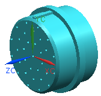
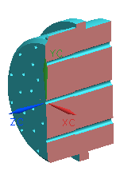

Open rte1_rotary_sw_conn.

This connector attaches to the back side of a rotary switch. In this orientation, the keying tab is on the top of the connector.
The cut away view below shows that each hole in this part is counterbored.

This part requires two ports, a fitting port for positioning with a mating receptacle and a multi port to define the individual terminals.
Make sure that you are in the Routing Electrical application.